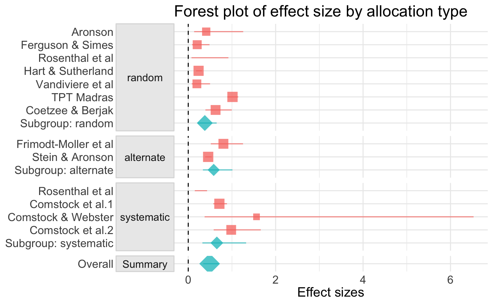

vignettes/extractMeta_WKH.Rmd
extractMeta_WKH.Rmdlibrary(metaverse)
#> -- Attaching packages ------------------------------------------------------------------------------------------- metaverse 0.0.1 --
#> v robvis 0.1.0 v metadat 0.1.0
#> v metafor 2.0.0 v broom 0.5.2.9001
#> v tidymeta 0.1.0.9000 v pubBias 0.0.1
#> v litsearchr 0.1.0 v metaDigitise 1.0.0
#> v revtools 0.3.0Model objects can be challenging to work with in their raw form in R. The broom:: package provides tools to extract commonly desired model output in table form:
- tidy() summarizes information about model components
- glance() reports information about the entire model
- augment() adds information about observations to a dataset ()
We begin by creating a random-effects model object via metafor::, which is included in the metaverse::.
# grab a dataset from metafor
# from the metafor homepage
dat.bcg <- metafor::dat.bcg
ma_model <-
escalc(
measure = "RR",
ai = tpos,
bi = tneg,
ci = cpos,
di = cneg,
data = dat.bcg
) %>% rma(yi, vi, data = ., method = "EB")We can now use broom:: functionality to manage the output in a common format
- tidy() summarizes information about model components
ma_model %>% tidy() %>% knitr::kable()| study | type | estimate | std.error | statistic | p.value | conf.low | conf.high |
|---|---|---|---|---|---|---|---|
| 1 | study | -0.8893113 | 0.5706004 | -1.5585538 | NA | -2.0076675 | 0.2290448 |
| 2 | study | -1.5853887 | 0.4411135 | -3.5940606 | NA | -2.4499552 | -0.7208221 |
| 3 | study | -1.3480731 | 0.6444905 | -2.0916883 | NA | -2.6112513 | -0.0848950 |
| 4 | study | -1.4415512 | 0.1414568 | -10.1907507 | NA | -1.7188015 | -1.1643009 |
| 5 | study | -0.2175473 | 0.2262966 | -0.9613369 | NA | -0.6610806 | 0.2259860 |
| 6 | study | -0.7861156 | 0.0831001 | -9.4598689 | NA | -0.9489887 | -0.6232425 |
| 7 | study | -1.6208982 | 0.4722470 | -3.4323101 | NA | -2.5464854 | -0.6953111 |
| 8 | study | 0.0119523 | 0.0629411 | 0.1898972 | NA | -0.1114099 | 0.1353146 |
| 9 | study | -0.4694176 | 0.2375589 | -1.9760057 | NA | -0.9350245 | -0.0038108 |
| 10 | study | -1.3713448 | 0.2702310 | -5.0747131 | NA | -1.9009878 | -0.8417018 |
| 11 | study | -0.3393588 | 0.1114101 | -3.0460324 | NA | -0.5577186 | -0.1209990 |
| 12 | study | 0.4459134 | 0.7297300 | 0.6110663 | NA | -0.9843311 | 1.8761579 |
| 13 | study | -0.0173139 | 0.2672165 | -0.0647937 | NA | -0.5410487 | 0.5064208 |
| Overall | summary | -0.7149682 | 0.1808922 | -3.9524542 | 7.74e-05 | -1.0695104 | -0.3604260 |
- glance() reports information about the entire model
ma_model %>% glance() %>% knitr::kable()| i.squared | h.squared | tau.squared | logLik | deviance | AIC | BIC | AICc | |
|---|---|---|---|---|---|---|---|---|
| ML | 92.33034 | 13.03839 | 0.3180685 | -12.69434 | 37.17454 | 29.38867 | 30.51857 | 30.58867 |
- augment() adds information about observations to a dataset ()
ma_model %>% augment() %>% knitr::kable()| y | .fitted | .se.fit | conf.low.fit | conf.high.fit | .resid | .hat | .cooksd | .std.resid | .dffits | .cov.ratio | tau.squared.del | qe.del | .weight | .dfbetas |
|---|---|---|---|---|---|---|---|---|---|---|---|---|---|---|
| -0.8893113 | -0.8011218 | 0.4114171 | -1.6074845 | 0.0052409 | -0.1743432 | 0.0508379 | 0.0012736 | -0.2131968 | -0.0346868 | 1.1559082 | 0.3557591 | 151.58257 | 5.083791 | -0.0341029 |
| -1.5853887 | -1.2550121 | 0.3541752 | -1.9491828 | -0.5608415 | -0.8704205 | 0.0638291 | 0.1127214 | -1.2873585 | -0.3433276 | 1.0063461 | 0.2956598 | 145.31761 | 6.382915 | -0.3457374 |
| -1.3480731 | -0.9895260 | 0.4366086 | -1.8452632 | -0.1337889 | -0.6331050 | 0.0446146 | 0.0251089 | -0.7465310 | -0.1566895 | 1.0917526 | 0.3347164 | 150.19704 | 4.461462 | -0.1552226 |
| -1.4415512 | -1.3985465 | 0.1376238 | -1.6682843 | -1.1288088 | -0.7265830 | 0.0967881 | 0.2072828 | -1.3855766 | -0.4774554 | 1.0222047 | 0.2873981 | 96.56260 | 9.678813 | -0.4741775 |
| -0.2175473 | -0.2865278 | 0.2115132 | -0.7010859 | 0.1280304 | 0.4974208 | 0.0886106 | 0.0741674 | 0.8469886 | 0.2685559 | 1.1261213 | 0.3285400 | 151.32001 | 8.861056 | 0.2687968 |
| -0.7861156 | -0.7846037 | 0.0823022 | -0.9459131 | -0.6232944 | -0.0711474 | 0.1006911 | 0.0005643 | -0.1187102 | -0.0224454 | 1.2188854 | 0.3571164 | 128.18666 | 10.069106 | -0.0226653 |
| -1.6208982 | -1.2475045 | 0.3696700 | -1.9720444 | -0.5229646 | -0.9059301 | 0.0604747 | 0.1086793 | -1.3017502 | -0.3371001 | 0.9993512 | 0.2944645 | 145.82964 | 6.047468 | -0.3400323 |
| 0.0119523 | 0.0030098 | 0.0625923 | -0.1196688 | 0.1256885 | 0.7269205 | 0.1016116 | 0.1977841 | 1.4241116 | 0.4702238 | 1.0191957 | 0.2840955 | 67.98581 | 10.161159 | 0.4653240 |
| -0.4694176 | -0.5064199 | 0.2206199 | -0.9388269 | -0.0740129 | 0.2455505 | 0.0873745 | 0.0211744 | 0.4071677 | 0.1395737 | 1.1853279 | 0.3506259 | 152.20506 | 8.737450 | 0.1398780 |
| -1.3713448 | -1.2487864 | 0.2460294 | -1.7309951 | -0.7665777 | -0.6563766 | 0.0836680 | 0.1127990 | -1.1093255 | -0.3394145 | 1.0687229 | 0.3099100 | 139.82707 | 8.366799 | -0.3393882 |
| -0.3393588 | -0.3534660 | 0.1095089 | -0.5680994 | -0.1388325 | 0.3756093 | 0.0990133 | 0.0559519 | 0.6703185 | 0.2293929 | 1.1673499 | 0.3389876 | 151.46550 | 9.901331 | 0.2305232 |
| 0.4459134 | -0.2808616 | 0.4603840 | -1.1831976 | 0.6214744 | 1.1608816 | 0.0384705 | 0.0553645 | 1.2982901 | 0.2385894 | 0.9770428 | 0.2947524 | 150.78683 | 3.847046 | 0.2426011 |
| -0.0173139 | -0.1452194 | 0.2437487 | -0.6229582 | 0.3325193 | 0.6976542 | 0.0840160 | 0.1196453 | 1.1878730 | 0.3524348 | 1.0520605 | 0.3037544 | 149.78842 | 8.401603 | 0.3523639 |
We can use functions from tidymeta:: to conduct subgroup meta-analyses
ma_model_wkh <- metafor::dat.bcg
ma <- ma_model_wkh %>%
escalc(
measure = "RR",
ai = tpos,
bi = tneg,
ci = cpos,
di = cneg,
data = .) %>%
dplyr::group_by(alloc) %>%
meta_analysis(yi = yi, vi = vi, slab = author, exponentiate = TRUE)
ma
#> # A tibble: 17 x 11
#> alloc study type estimate std.error statistic p.value conf.low
#> <chr> <chr> <chr> <dbl> <dbl> <dbl> <dbl> <dbl>
#> 1 rand~ Aron~ study 0.411 0.571 -1.56 NA 0.134
#> 2 rand~ Ferg~ study 0.205 0.441 -3.59 NA 0.0863
#> 3 rand~ Rose~ study 0.260 0.644 -2.09 NA 0.0734
#> 4 rand~ Hart~ study 0.237 0.141 -10.2 NA 0.179
#> 5 rand~ Vand~ study 0.198 0.472 -3.43 NA 0.0784
#> 6 rand~ TPT ~ study 1.01 0.0629 0.190 NA 0.895
#> 7 rand~ Coet~ study 0.625 0.238 -1.98 NA 0.393
#> 8 rand~ Subg~ summ~ 0.379 0.276 -3.52 4.34e-4 0.221
#> 9 alte~ Frim~ study 0.804 0.226 -0.961 NA 0.516
#> 10 alte~ Stei~ study 0.456 0.0831 -9.46 NA 0.387
#> 11 alte~ Subg~ summ~ 0.582 0.282 -1.92 5.48e-2 0.335
#> 12 syst~ Rose~ study 0.254 0.270 -5.07 NA 0.149
#> 13 syst~ Coms~ study 0.712 0.111 -3.05 NA 0.573
#> 14 syst~ Coms~ study 1.56 0.730 0.611 NA 0.374
#> 15 syst~ Coms~ study 0.983 0.267 -0.0648 NA 0.582
#> 16 syst~ Subg~ summ~ 0.654 0.360 -1.18 2.38e-1 0.323
#> 17 Summ~ Over~ summ~ 0.489 0.180 -3.97 7.05e-5 0.344
#> # ... with 3 more variables: conf.high <dbl>, meta <list>, weight <dbl>tidymeta:: also has some handy ggplot based graphics for meta-analysis. Graph elements can be added using ggplot2 geoms.
fp <- ma %>%
forest_plot(group = alloc) +
ggplot2::geom_vline(xintercept = 0, linetype = "dashed") +
ggplot2::xlab("Effect sizes") +
ggplot2::labs(title = "Forest plot of effect size by allocation type")
fp
Estimates the Vevea and Hedges (1995) weight-function model using the pubBias:: package.
weightrMeta(ma)
#>
#> Unadjusted Model (k = 17):
#>
#> tau^2 (estimated amount of total heterogeneity): 0.0000 (SE = 0.0516)
#> tau (square root of estimated tau^2 value): 0.0000
#>
#> Model Results:
#>
#> estimate std.error z-stat p-val ci.lb ci.ub
#> Intercept 0.6212 0.1138 5.458 4.8221e-08 0.3981 0.8442
#>
#> Adjusted Model (k = 17):
#>
#> tau^2 (estimated amount of total heterogeneity): 0.0000 (SE = NaN)
#> tau (square root of estimated tau^2 value): 0.0000
#>
#> Model Results:
#>
#> estimate std.error z-stat p-val ci.lb ci.ub
#> Intercept 0.8846 0.1295 6.833 8.314e-12 0.6309 1.138
#> 0.025 < p < 1 10.6636 10.4276 1.023 0.30648 -9.7741 31.101
#>
#> Likelihood Ratio Test:
#> X^2(df = 1) = 5.590652, p-val = 0.018057